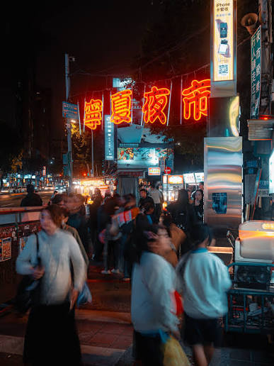
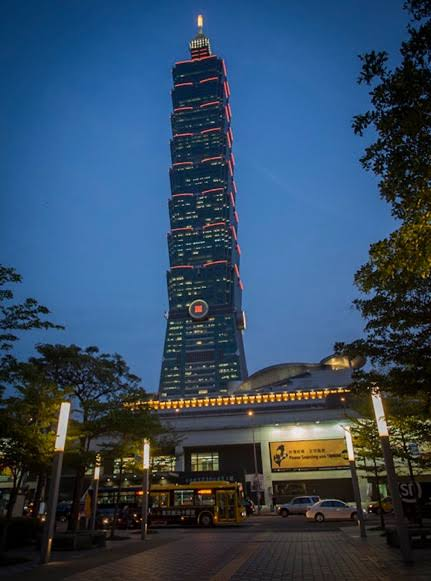
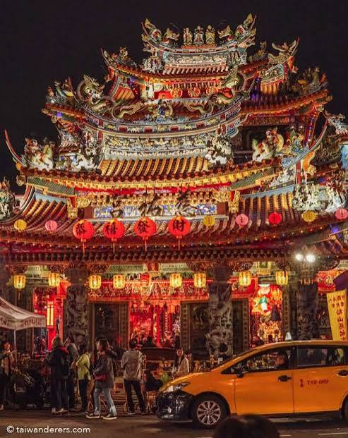
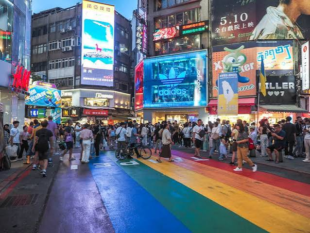

04: Gallary
Three sides of Taipei
Move your mouse over each photograph
To reveal more information



Hower your mouse over the pictures
This is Taipei City. Truly a city that never sleeps.
01: Discover

Discover Taipei, the vibrant capital of Taiwan, where modern innovation meets centuries of tradition. This exciting city offers an unforgettable experience filled with culture, history, delicious food, and breathtaking scenery.
Begin your journey at Taipei 101, one of the city's most iconic landmarks, offering spectacular panoramic views. Explore the historic streets of Dadaocheng, where traditional architecture, local shops, and charming cafés create a unique atmosphere. Visit the National Palace Museum to discover remarkable treasures of Chinese history and art.
Taipei is also famous for its lively night markets. At places like Raohe Night Market, visitors can enjoy delicious street food, discover local specialties, and experience the city's energetic nightlife.
For nature lovers, Taipei offers beautiful mountains, peaceful parks, and scenic hiking trails. Take a relaxing trip to Beitou's hot springs or ride the Maokong Gondola for stunning views of the surrounding landscape.
Getting around is easy thanks to Taipei's efficient public transportation system, including its modern MRT network, which connects major attractions and neighborhoods.
Whether you're interested in exploring ancient temples, experiencing Taiwanese culture, or enjoying modern city life, Taipei has something for everyone. Discover its hidden gems, welcoming atmosphere, and unforgettable experiences that make every visit truly special.
02: Neigborhoods

Taipei is a city of diverse neighborhoods, each offering its own unique atmosphere, attractions, and cultural experiences. From bustling shopping districts to peaceful historic streets, exploring Taipei's neighborhoods reveals the city's fascinating character.
Ximending is one of Taipei's most vibrant areas, famous for its colorful streets, trendy shops, entertainment venues, and lively nightlife. Popular among young people, it offers an exciting combination of fashion, food, and modern culture.
Da'an is known for its comfortable residential atmosphere, stylish cafés, and beautiful green spaces. Da'an Forest Park provides a peaceful escape from the busy city, making the neighborhood perfect for relaxation.
Dadaocheng, located within Datong District, showcases Taipei's historical heritage. Its traditional buildings, tea shops, and local markets offer visitors a glimpse into the city's past.
Xinyi represents Taipei's modern side, featuring impressive skyscrapers, luxury shopping malls, and the iconic Taipei 101. It is a major destination for shopping, dining, and entertainment.
Meanwhile, Beitou offers a completely different experience with its natural hot springs, mountain scenery, and relaxing atmosphere.
Thanks to Taipei's extensive MRT network, exploring these neighborhoods is convenient and enjoyable. Each district has something special to discover, making Taipei a fascinating city full of contrasts, traditions, and unforgettable experiences for visitors.
03: Travel Planner
Plan your morning, afternoon, and evening with this simple three-day itinerary.
| Day | Morning | Afternoon | Evening |
| Day 1 | Taipei 101 | CKS Memorial | Longshan Temple |
| Day 2 | Taipei 101 | Taipei 101 | Night Market |
| Day 3 | Big Event | Taipei 101 | |
A simple budget for transportation
| Category | Item | Expected Cost |
| Transportation | Metro | NT$ 30 |
| Bus | NT$ 30 | |
| Food | Lunch | NT$ 100 |
| Dinner | NT$ 300 |
04: Gallary
Move your mouse over each photograph
To reveal more information


Hower your mouse over the pictures